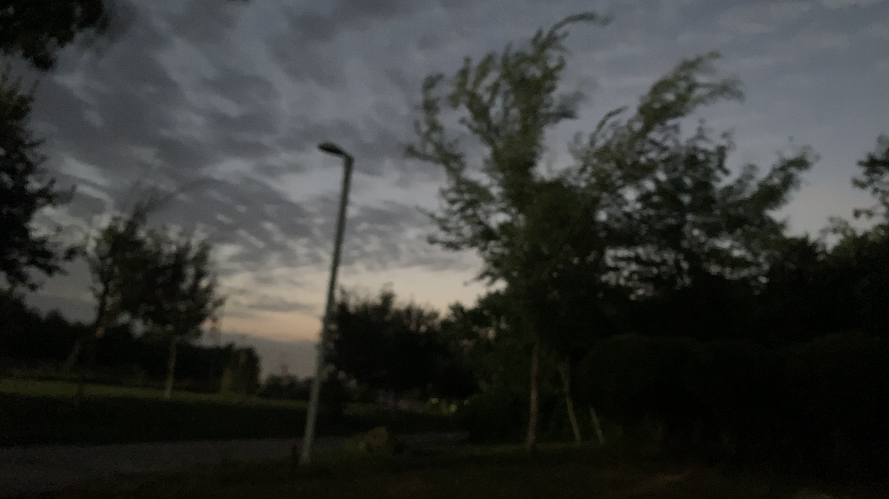
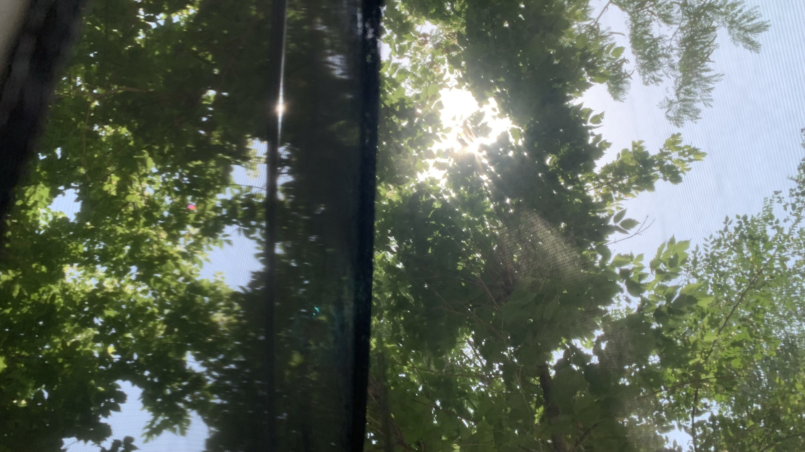
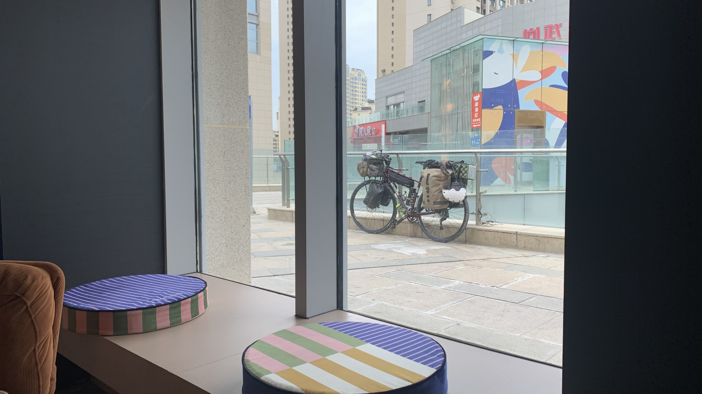
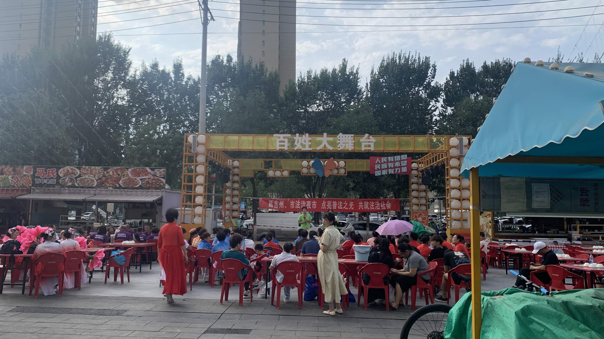
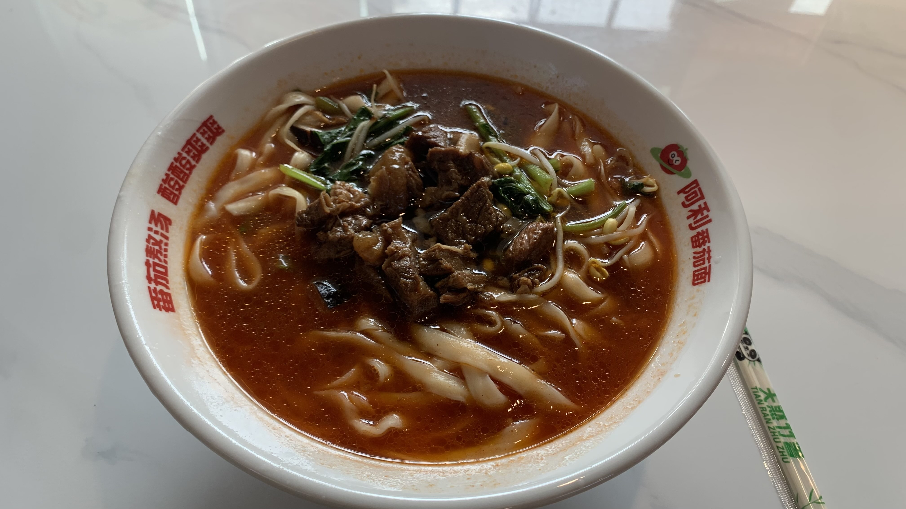
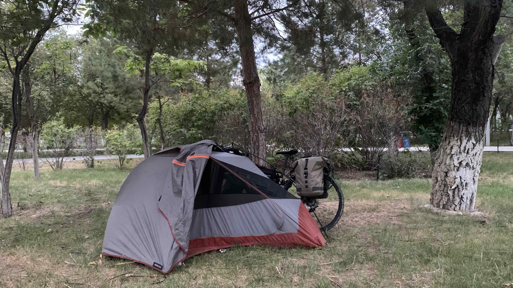

k-Day 140｜百姓大舞台
昨晚的直播大叔嘶吼到凌晨，河邊又來了一群帶著音響的人加入混戰。凌晨一點倉皇逃離免費營地，躲到公園另一端的樹叢裡睡覺。

清晨六點周圍有散步的聲音，同時發出哈哈的氣功聲。醒來發現氣溫驟降，刮起大風。

在民宿休息時也是每晚都有人要和我討論武統之必然，拉著肚子身處如此吵雜的環境，身體越來越沈重，每天都像睡不飽似的。既然是大風天，那就睡到自然醒吧。

中午十二點，白天的新疆很安靜，決定找一間位於商場二樓的咖啡廳坐下整理日誌。咖啡味道很複雜，已經不是好或不好的程度。不過店裡只有我一個，靜靜地待到七點，肚子太餓了才下樓覓食。

樓下舞台放起電音舞曲，臨時攤販區也坐了一些人。看來這就是新疆的夜晚，人們輪流上台跳舞唱歌，不同的團隊還有各自的隊服。想想其實也不錯，作為一個疲憊的街頭露宿者，當然會希望公園是安靜的，但是社區的長者能有些團康娛樂，也是城市的福音。

將二十三號停在舞台前，走進一間看得見自行車的牛肉麵店。麵是好吃的，番茄湯頭偏鹹。

吃飽後轉移陣地，換了一個更大的城市公園，牽著車走到深處，離廁所不遠，又足夠隱蔽。
躺進帳篷不久，樹叢裡又聚集了一些喝酒聊天的人，每個人都開著手機擴音看抖音影片，同時有一搭沒一搭的說笑聊天。為什麼一定要在我帳篷旁邊？我是篝火嗎？
今日花費： 元